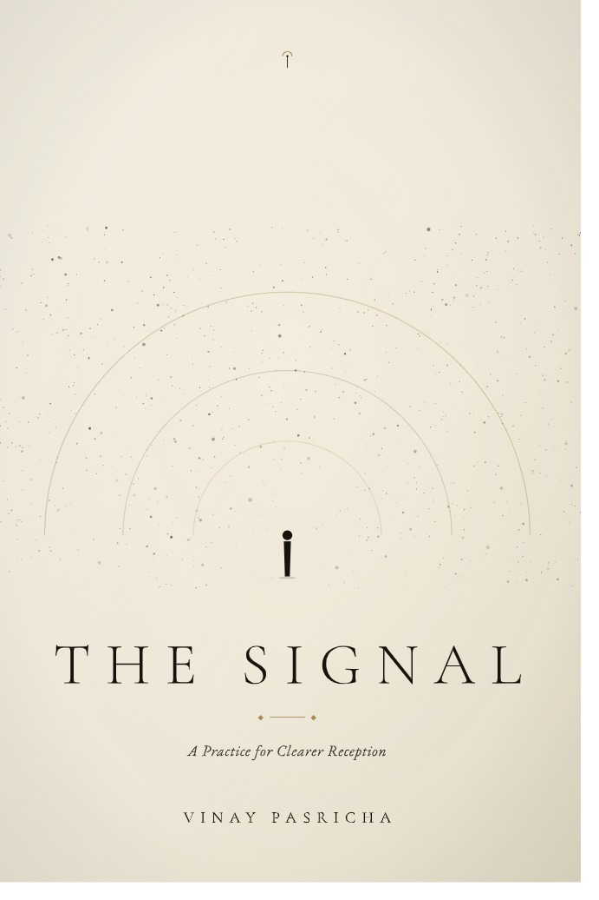

Most people are not behind in their thinking. They are simply paying attention to too many things to think well about any of them. The cost is rarely visible — until the wrong decision is made on the wrong frame, and the source of the error cannot be traced.
The Signal is being released differently than any book before it. Not as pages, then a website. As a developmental field you can enter today — an interactive sequence of sessions, mediated by AI, that surface the splits in your own thinking — with the printed book following at the end of 2026 as the canonical companion.
The Signal is the first book where the reader is developmentally trained through interaction with the book itself — not by reading it, but by entering it. The Field is open now. There are no levels, no badges, no streaks. There is only a calm sequence of structured sessions.
Enter The Field →The structure is provisional and may evolve as the draft matures. These are the questions the manuscript is currently being shaped to answer. If you are someone these questions are alive for, the book is being written with you in mind.
A working definition that distinguishes noise from information, from data, from content. Noise is not the absence of signal — it is the structural condition of more signal than attention. Naming this precisely is the foundation everything else stands on.
Why the strongest ideas become weaker as they spread — and what to do as a reader who wants to encounter signal at its original strength, not its diluted final form.
A practical chapter on how to construct an information diet that protects your attention — not by abstinence, but by curation. Most reading lists are too long; the right one is shorter, deeper, and re-read.
What actually happens to a mind that has trained itself on 30-second formats. The chapter is unromantic and based on observation, not on platform-shaming.
A practical manual for the unfashionable skill of reading something difficult, slowly, more than once. With concrete techniques and a defence against the productivity culture that disparages all of it.
Why returning to the same text, the same problem, the same person months and years later is the most underused intellectual tool. Linear progress is a myth; recursive depth is the actual mechanism.
The investment metaphor, taken seriously. What happens to a mind that compounds its reading over decades — and the specific habits that make it compound rather than disperse.
A closing chapter on the kinds of work that take a lifetime to make sense of — and the kind of attention required to keep faith with them.
The world has never been louder. The discipline of finding the signal has never been more important.
The previous books — AI for Business Leaders, The SIV Method, The Execution Doctrine, Organizational Frequency — are about how to act well inside a changing world. The Signal is about what to pay attention to in the first place. Without the underlying clarity it tries to support, the other disciplines float free of any ground.
The book is being written slowly. It is the most personal of the four — closer to a notebook than a manual — and that is deliberate. A book about signal cannot itself be noisy. It will arrive when it is ready, which is currently estimated for late 2026.
If you want to be told the moment it ships, leave your email above. If you would rather not, that itself is a small expression of the discipline the book is about. Either is fine.
— Adapted from the working preface, draft of May 2026

A Practice for Clearer Reception.